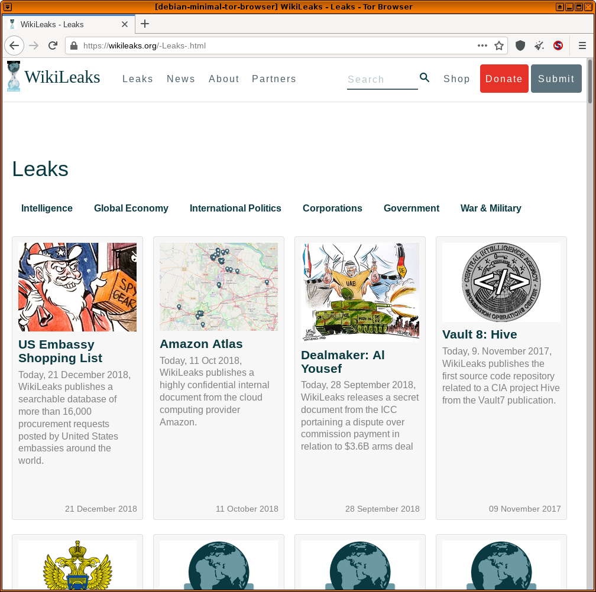

We believe security software like Whonix needs to remain Open Source and independent. Would you help sustain and grow the project? Learn more about our 14 year success story and maybe DONATE!
Tor Browser/Advanced UsersDocumentationVerify Tor Browser in WindowsPrevious page: Tor Browser/Advanced UsersIndex page: DocumentationNext page: Verify Tor Browser in WindowsInstall Tor Browser on Debian, Kicksecure or Qubes using Tor Browser Downloader (by Whonix developers)

- A) Installation of Tor Browser on Whonix: Tor Browser is installed by default in Whonix. For more information and re-installtion, see the Tor Browser wiki page.
- B) Installation of Tor Browser using tb-updater (by Whonix developers) for Debian, Kicksecure, or Qubes: See this wiki page.
Introduction
 COMMUNITY SUPPORT ONLY : THIS WHOLE WIKI
PAGE is only supported by the community. Whonix
developers are very unlikely to provide free support
for this content. See Community Support for further information,
including implications and possible alternatives.
COMMUNITY SUPPORT ONLY : THIS WHOLE WIKI
PAGE is only supported by the community. Whonix
developers are very unlikely to provide free support
for this content. See Community Support for further information,
including implications and possible alternatives.
Various wiki sections recommend that a functional Tor Browser instance is maintained outside of the Whonix platform. This is useful in various cases:
- Should Whonix ever break, it is possible to search for a solution anonymously.
- System-wide Tor problems can be easily detected by testing connectivity outside of Whonix.
- Certain Tor / Tor Browser activities are difficult (or impossible) to configure in Whonix, but are much easier in the standard configuration. [1]
In Non-Qubes-Whonix,
it is recommended to have Tor Browser installed on the Linux / macOS /
Windows host platform. In Qubes-Whonix™, it is recommended to
install Tor Browser in a debian-13,
debian-13-minimal or kicksecure App Qube
(advanced users).
Note: If an expired key signature message like below appears, the steps in this chapter must be performed again due to an update of the Whonix signing key; see Expired key signature.
The following signatures were invalid: EXPKEYSIG CB8D50BB77BB3C48 Patrick Schleizer adrelanos@whonix.orgEasy
All Platforms: Manual Tor Browser Download
Follow these instructions to manually download Tor Browser
with Firefox-ESR via the available onion service. This method is not
anonymous, unless Qubes-Whonix
users temporarily set sys-whonix as the NetVM for the
non-Whonix App Qube.
Debian Linux Hosts
Tor Browser can optionally be downloaded utilizing the tb-updater
software package by Whonix developers. By default the download does
not occur over Tor, meaning it is not anonymous.
1. Download the Signing Key.
wget https://www.whonix.org/derivative.asc
2. Optional: Check the Signing Key for better security.
3. Add Whonix signing key.
sudo cp derivative.asc /usr/share/keyrings/derivative.asc
4. Whonix APT repository choices.
Optional: See Whonix Packages for Debian Hosts and Whonix Host Enhancements instead of the next step for more secure and complex options.
5. Add Whonix APT repository.
echo "Types: deb URIs: https://deb.whonix.org Suites: trixie Components: main contrib non-free Enabled: yes Signed-By: /usr/share/keyrings/derivative.asc" | sudo tee /etc/apt/sources.list.d/derivative.sources
5. Update the package lists.
sudo apt update
6. Install tb-updater.
sudo apt install tb-updater
Moderate: QubesOS
 Qubes-Whonix R4 only! This method
is anonymous.
Qubes-Whonix R4 only! This method
is anonymous.
Summary of instructions of Qubes OS. Details below. These instructions:
- Anonymously retrieve and verify the Whonix signing key.
- Copy the Whonix signing key to a debian-13
(
debian-13-tor) or debian-13-minimal (debian-13-minimal-tor) Template clone. - Add the Whonix signing key to the list of trusted keys.
- Install apt-transport-tor in the
debian-13-tor/debian-13-minimal-torTemplate. - Add the Whonix APT repository.
- Install
tb-updaterfrom the Whonix repository. - Create a
debian-tor-browser/debian-minimal-tor-browserApp Qube based on the Template clone.
The debian-13-minimal template provides a smaller attack
surface, but is recommended for advanced users. Several package
prerequisites are required for full functionality; see footnote.
[2] [3]
Clone the Template
 Prerequisite: The
Prerequisite: The debian-13 or
debian-13-minimal Template must be manually installed first
if it not already available. In dom0, run either.
sudo
qvm-template install debian-13 Or.
sudo
qvm-template install debian-13-minimal
In Qube Manager:
Right-click debian-13 or debian-13-minimal template →
Clone qube →
Rename to debian-13-tor or debian-13-minimal-tor
anon-whonix Steps
Run the following commands in anon-whonix terminal.
Advanced users can utilize a Whonix DispVM instead in this section.
1. Download the Whonix signing key.
curl --tlsv1.3 --proto =https --max-time 180 --output derivative.asc https://www.whonix.org/derivative.asc
2. Display the key fingerprint.
gpg --keyid-format long --import --import-options show-only --with-fingerprint derivative.asc
3. Verify the Whonix signing key fingerprint.
Compare the fingerprint to the one found here. The most important check is confirming the fingerprint exactly matches the output below. [4]
Key fingerprint = 916B 8D99 C38E AF5E 8ADC 7A2A 8D66 066A 2EEA CCDAThe message
gpg: key 8D66066A2EEACCDA: 104 signatures not checked due to missing keys
is related to the The OpenPGP Web of Trust. Advanced users can learn
more about this here.
4. Rename the Whonix signing key to a temporary
derivative.asc file.
mv derivative.asc /tmp/derivative.asc
5. Copy the derivative.asc text file to
the debian-13-tor or debian-13-minimal-tor
Template.
qvm-copy /tmp/derivative.asc
When prompted, choose either the debian-13-tor or
debian-13-minimal-tor Template.
Template Steps
Complete the following steps in debian-13-tor or
debian-13-minimal-tor terminal.
1. Add the Whonix signing key to the list of trusted keys.
sudo cp ~/QubesIncoming/anon-whonix/derivative.asc /usr/share/keyrings/derivative.asc
2. Add the Whonix stable APT repository. [5] [6]
echo "Types: deb URIs: https://deb.whonix.org Suites: trixie Components: main contrib non-free Enabled: yes Signed-By: /usr/share/keyrings/derivative.asc" | sudo tee /etc/apt/sources.list.d/derivative.sources
3. Update the package lists.
sudo apt update
4. Install tb-updater by Whonix.
sudo apt install tb-updater
Note: This step will correctly install tb-updater and
should also automatically download Tor Browser. If that does not occur,
complete steps 2 to 4 below after creating an App Qube.
App Qube Steps
1. Create an App Qube based on the
debian-13-tor or debian-13-minimal-tor
Template.
In Qube Manager:
Left-click Qube →
Create new qube
Use the following settings:
- Name and label: debian-tor-browser or debian-minimal-tor-browser
- Type: App Qube
- Template: debian-13-tor or debian-13-minimal-tor
- Networking: default (sys-firewall)
2. Optional: Temporarily set
sys-whonix as the NetVM for the Debian App Qube.
If Tor Browser was not downloaded at step 5 in the previous section, complete steps 2 to 4.
In Qube Manager:
Right-click debian-tor-browser or
debian-minimal-tor-browser →
Qube settings →
Networking →
Select sys-whonix →
OK
3. Optional: Download Tor Browser.
In terminal, run.
update-torbrowser --input gui
4. Optional: Revert the networking setting
to sys-firewall in Qube Manager.
5. Launch Tor Browser from the App Qube menu and check it is functional.
Note: Tor Browser can be kept up-to-date using Tor Browser's internal updater. It is not necessary to run the update-torbrowser command again.
Figure: Tor Browser in Qubes'
debian-minimal-tor-browser App Qube

Footnotes
- For example, the Snowflake pluggable transport client is currently experimental in Whonix.
- At the time of writing the Qubes documentation and forums suggest the following essential packages for browsing purposes: * qubes-core-agent-passwordless-root * qubes-core-agent-networking * pulseaudio-qubes To utilize nautilus file manager so a GUI can be used to interact with downloaded files (optional): * qubes-core-agent-nautilus * nautilus * zenity If you plan on mounting encrypted drives (optional): * gnome-keyring * policykit-1 * libblockdev-crypto2
- Also see automate debian-minimal based template creation
- Minor changes in the output such as new uids (email addresses) or newer expiration dates are inconsequential.
- Alternatively use the stable onion APT repository: echo "Types: deb URIs: http://deb.dds6qkxpwdeubwucdiaord2xgbbeyds25rbsgr73tbfpqpt4a6vjwsyd.onion Suites: trixie Components: main contrib non-free Enabled: yes Signed-By: /usr/share/keyrings/derivative.asc" | sudo tee /etc/apt/sources.list.d/derivative.sources
- Note:
tor+httpdoes not work in this configuration.
Categories: Documentation